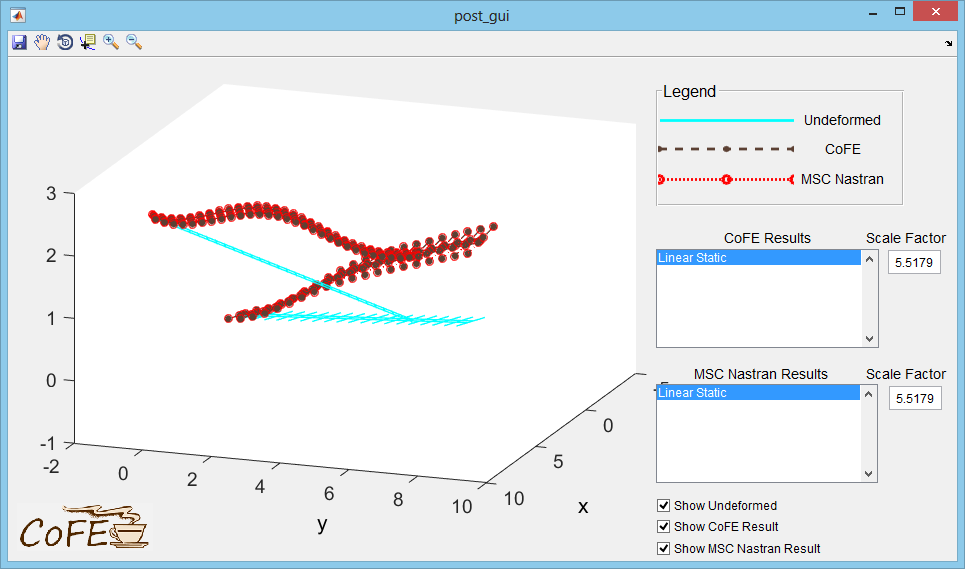
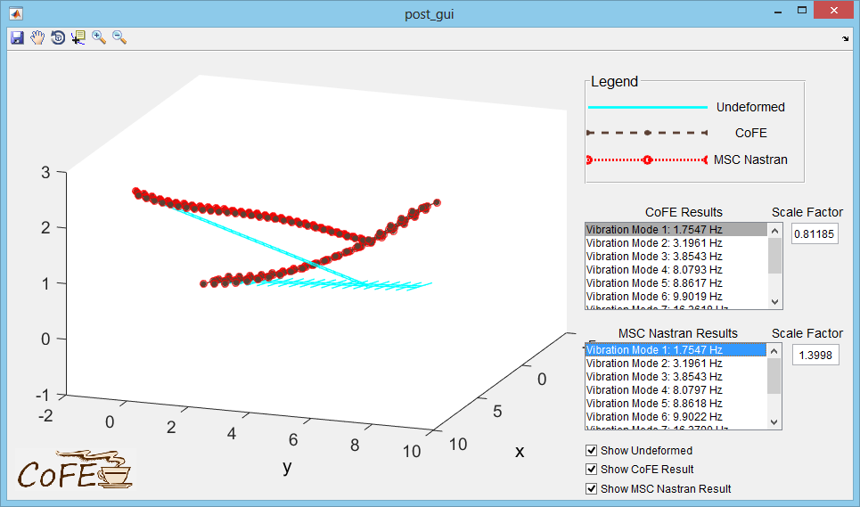
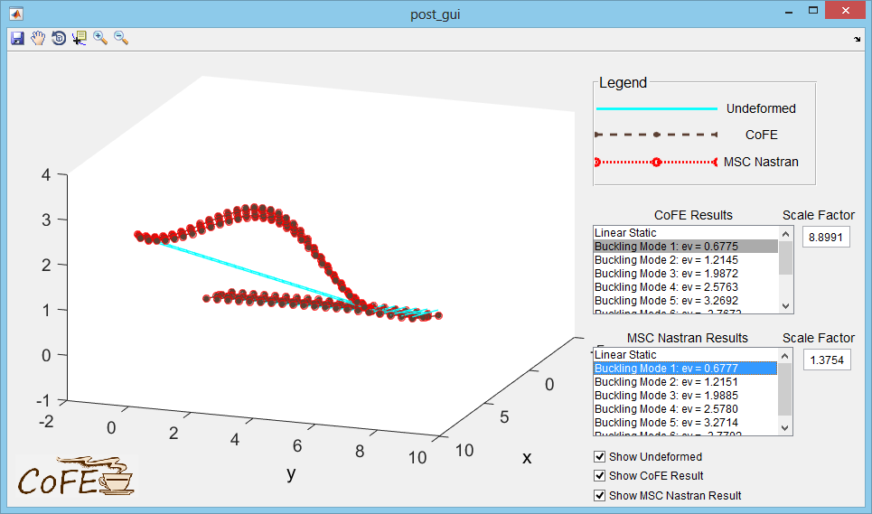

This joined-wing SensorCraft scaled model was developed for:
and subsequently implemented in CoFE for:
Example CoFE input files for this page are provided here:
NASTRAN_CoFE/CoFE_examples/a6_joinedwing/
MSC Nastran verification files are provided here:
NASTRAN_CoFE/CoFE_examples/a6_joinedwing/NASTRAN_comparison/
Open the jw_analysis.m file and check that the SOL variable is set to 101. Run the script. The postprocessor GUI will show the linear static response compared to the response from MSC Nastran.
The response has near perfect agreement with MSC Nastran.
Change the SOL variable to 103 and run the script. The postprocessor GUI will show the first vibration mode shape compared to the result from MSC Nastran.
The response has near perfect agreement with MSC Nastran. The 822 Hz mode is a torsional mode, which is poorly visualized by most postprocessors. Other available results can be selected from the list boxes in the GUI.
Change the SOL variable to 105 and run the script. The postprocessor GUI will show the buckling mode shapes compared to the results from MSC Nastran.
The postprocessor GUI will initially show the linear static response to the applied reference load. Buckling modes can be selected in GUI list boxes. The response has near perfect agreement with MSC Nastran. Eigenvectors may be scaled differently.